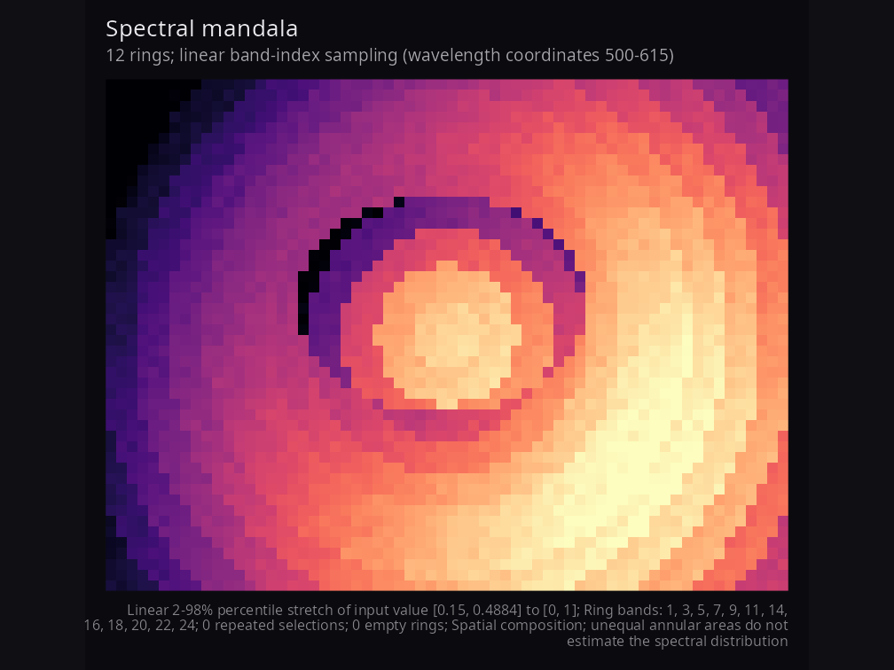
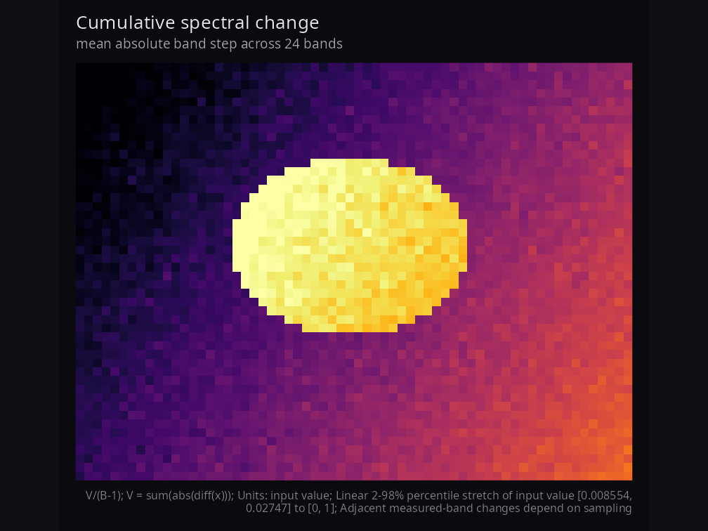
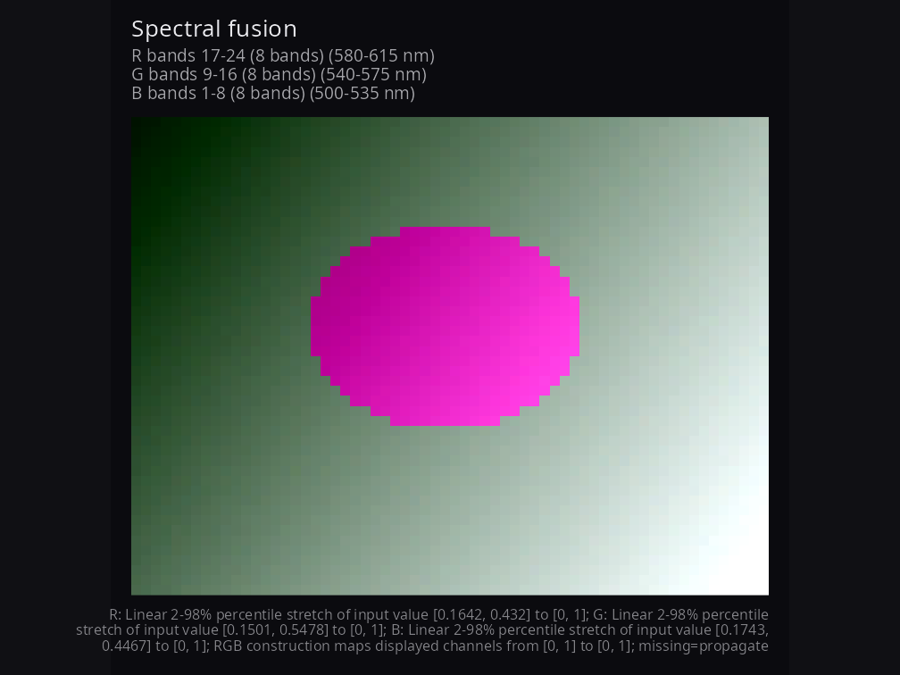
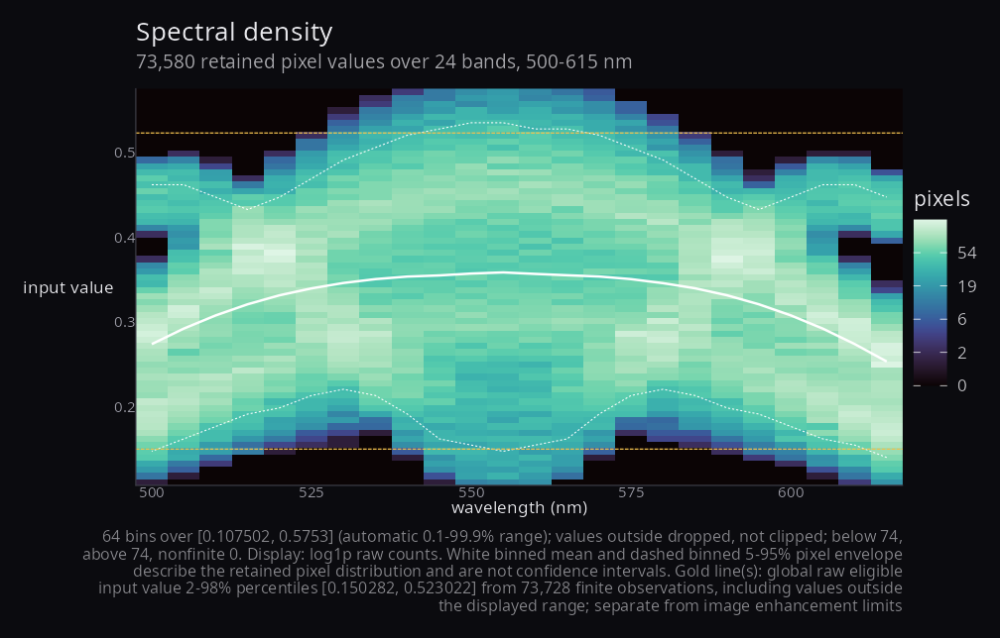
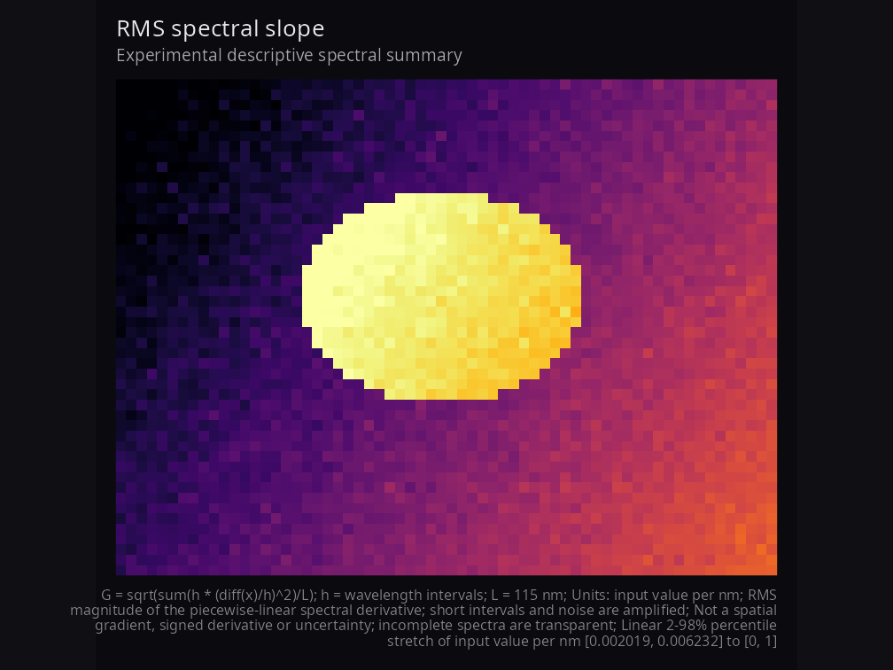
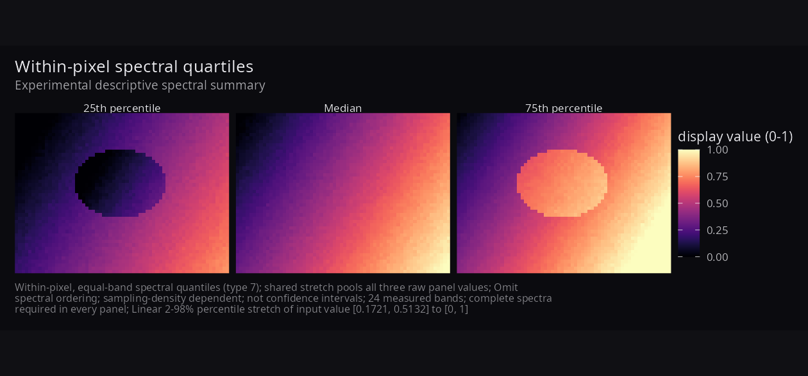

Artistic compositions and descriptive summaries of hyperspectral imagery. The 0.2.0 candidate consumes an hsi_cube or numeric (rows, cols, bands) array and returns composable ggplots. It does not read recordings, calibrate values or infer physiology. Readers such as hyperspectR provide upstream integration.
Compositions use the spectral dimension to reveal spatial and spectral structure. Supported edge cases include single-band density, repeated mandala selections, overlapping fusion groups and singleton quartiles; these can reduce to a single-band result. Every figure records what was calculated and how it was displayed.
Install and reproduce
Requires R >= 4.1.0 and ggplot2 >= 3.4.0. To install this candidate from a local checkout and regenerate its public synthetic gallery:
For optional patchwork composition with ggplot2 3.4.0, the tested compatible version is patchwork 1.1.3; current patchwork requires a newer ggplot2 in practice. The minimum-compatibility workflow checks both selected old and current dependency combinations.
library(hyperspectaculR)
cube <- hsa_demo_cube(seed = 42) # 48 x 64 x 24; physical coordinates in nm
hsa_mandala(cube, n_rings = 12)
hsa_spectral_flux(cube)
hsa_fusion(cube)
hsa_spectral_density(cube, nbins = 64, show_limits = TRUE)The default script needs no recordings or reader packages. Seed, parameters, version and compact provenance are in man/figures/gallery-provenance.R. An explicit HSA_SHOWCASE_LAB_RDS or HSA_SHOWCASE_CUBERT_PATH may enable local laboratory integration under showcase/laboratory; failure still leaves the synthetic gallery and studies available. Calibration must come from known metadata or a documented calibration workflow, never from numeric range alone.
Validity, coordinates and display
cube$mask <- matrix(TRUE, 48, 64)
cube$mask[1:4, ] <- FALSE
cube$data[10, 10, 2] <- Inf
p <- hsa_fusion(cube, red = 17:24, green = 9:16, blue = 1:8)
q <- hsa_fusion(cube, red = 17:24, green = 9:16, blue = 1:8,
missing = "available")
hsa_provenance(q)$missingness # inspect per-channel contributor summaries
# Extracting $data alone drops cube-level mask/wavelength fields.
# A plain array has band-index coordinates unless attributes provide metadata.
hsa_spectral_density(cube$data)
hsa_mandala(cube, n_rings = 12, sampling = "wavelength")
hsa_fusion(cube, red = c(590, 605), green = c(555, 570),
blue = c(505, 520), by = "wavelength")Masks exclude spatial pixels; NA, NaN and infinities exclude observations. Image quantities require their selected bands to be finite. Fusion defaults to missing = "propagate"; "available" averages each channel’s finite contributors and still requires a contribution in all three channels. Default fusion uses disjoint contiguous index thirds, highest indices to red, regardless of by. Explicit wavelength targets select the nearest measured band, ties toward the shorter wavelength. Index requests are whole indices; physical requests require strictly increasing wavelength metadata in nm.
Available-case provenance retains each channel’s selected-band count, minimum/maximum contributors, complete-pixel count and no-contributor-pixel count. It does not retain a contributor count for every spatial pixel.
Range and type-7 percentile stretches map raw values to [0, 1]. Collapsed percentile limits fall back to the finite range; constant data map to the dark endpoint. stretch = "none" preserves raw values and checks them against the fixed display_limits domain. Its endpoints must contain every finite rendered value. Scalar plot data retain raw_value; fusion retains raw_r, raw_g, raw_b. Value labels default to input value.
p <- hsa_mandala(cube, n_rings = 12, stretch = "none",
display_limits = c(-1, 1), value_label = "input value")
hsa_provenance(p)$enhancement # endpoints, exclusions, method and fallback
p + ggplot2::theme(plot.title = ggplot2::element_text(size = 16)) +
ggplot2::labs(title = "My scene")+ theme() and + labs() preserve original-rendering provenance. Arbitrary later edits are not recalculated. Inspect each component before assembling a patchwork; hsa_provenance() rejects the combined object.
Synthetic gallery

Mandala rings are spatial areas, not estimates of a spectral distribution. Physical targets may repeat measured bands; full ring selections and empty rings remain in provenance when captions abbreviate long selections.

For adjacent measured values, total change is V = sum(abs(diff(x))); default mean step is V/(B-1). Both have input-value units (the latter per measured step). normalization = "wavelength_span" gives V/L in input value per nm, the mean absolute slope of a piecewise-linear spectrum across span L. For a noiseless rise from 0 to 1 across 400 nm, three and six bands give mean steps 0.5 and 0.2, but both give a physical slope of 0.0025 per nm. This does not establish universal sampling comparability: gaps miss unresolved peaks, and interpolation cannot recover them.


Density bins include both outer limits and are right closed internally. Values outside the range are dropped, not clipped. Per band, eligible = finite + nonfinite and finite = below + kept + above; masked pixels are excluded from eligible counts. normalise = "band" divides by retained counts; empty bands have missing shares and gaps in overlays. White binned means and 5–95% pixel envelopes describe retained populations, not confidence intervals. Gold references use raw finite eligible observations, including those outside the displayed range; they are separate from image enhancement endpoints. Histogram rectangles use midpoint boundaries on irregular spectral grids; one band uses a disclosed coordinate width of one. Raw counts, breaks, references and accounting are available through hsa_provenance().
Experimental descriptive summaries

hsa_spectral_gradient() computes G = sqrt(sum(h * (diff(x)/h)^2)/L) for wavelength intervals h and span L. It is nonnegative, in input value per nm, and requires physical coordinates. It is neither a signed derivative nor a spatial gradient. At wavelengths (500, 501, 505) with values (0, 2, 2), mean absolute slope is 0.4 per nm and RMS slope is approximately 0.894427 per nm. Short intervals and noise can dominate. For independent noise of SD sigma on a flat signal, E[G^2] = 2 * sigma^2 / L * sum(1/h); adding noisy bands can increase G.

hsa_spectral_quartiles() gives type-7 25th, 50th and 75th percentiles, weighting measured bands equally. The values (0, 1, 4, 9) give (0.75, 2.5, 5.25); reordering them preserves quartiles but can change flux. One pooled stretch and one legend apply to all three panels. These quantities discard spectral order, depend on sampling density and are not uncertainty intervals. Both new summaries are experimental, descriptive and require complete finite spectra. No physiological interpretation follows from them. See the sampling evidence (source Markdown) for independent examples, assumptions and reproducible experiments.
Migrating to 0.2.0
Visible results can change: invalid image pixels are transparent; zero flux and constant images use the dark endpoint; default fusion thirds cover every band exactly once; raw display domains stay fixed; density coordinates, retained populations and reference lines are now explicit. Missing wavelengths are labelled as band indices, not nm. Experimental slope/quartile renderers and hsa_provenance() are new exports.
Malformed masks or wavelengths, fractional/out-of-range indices, duplicate selections within a fusion group, incomplete explicit RGB groups, invalid counts/probabilities, conflicting flux normalization controls, and raw values outside display_limits now raise errors. Entirely invalid renderings fail clearly. Existing argument order and normalise flux behavior are retained; use the appended normalization selector for explicit physical units.